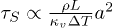
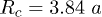

Introduction
Cooling down a hot body is generally possible by immersing it into a high-heat-capacity liquid such as water. However, if
its temperature is too high, the cooling efficiency is dramatically reduced by the instantaneous generation of an insulating
vapor layer between the liquid and the hot body [1]. On a small scale, this phenomenon can rather be taken as an advantage. When a drop is released on a plate heated well above
the boiling temperature of the liquid, the drop may levitate on its own vapor. This phenomenon, named Leidenfrost effect after
the name of its discoverer [2], prevents the drop from touching the substrate, mimicking a non-wetting situation when static effects are considered and
a frictionless one when dynamics is investigated. A classical work highlighting the main scaling laws applying to Leidenfrost
droplets has been published by Biance et al. [3].
In static situations, the shape of the drop and the evaporation dynamics have been recently revisited [4–8], highlighting a pocket-like geometry of the vapor film underneath the evaporating drop. Accurate interferometric measurements
of the vapor film thickness profile [9] indeed turn out to be in very good agreement with a theoretical modeling coupling vapor flow, capillarity and hydrostatic
pressure effects [8]. For large drops, a critical radius above which the vapor pocket bursts at the upper part of these drops can be determined [3,4,8], very similarly to what happens in the related situation of a drop levitating over blown air [4,10,11]. In dynamic situations, properties of Leidenfrost drops have also been tested by impacting drops on a hot plate [12–15]. Finally, the nearly frictionless motion of Leidenfrost droplets can also lead to the self-propulsion of drops on patterned
substrates [16,17] which enables rapid transport of small objects [18]. Despite this large amount of work devoted to describe and use Leidenfrost drops, the threshold temperature above which
the Leidenfrost effect takes place remains poorly understood [19]. In particular, experimental data on the different factors influencing this effect are still lacking, even though surface
roughness and wetting properties are recognized to affect this threshold temperature significantly [20–25].
In this work, we have investigated the effect of gravity on different properties of Leidenfrost drops, such as drop geometry
and lifetime or chimney appearance. The results obtained are in good agreement with classical scalings of Biance et al. [3], based on the assumption of a flat bottom surface of the drop. However, we also observe an unexpected effect of gravity
on the Leidenfrost point, which is tentatively interpreted as a subtle consequence of the non-trivial shape of the vapor film
underneath the droplet.
Experiments were performed at the Large Diameter Centrifuge (LDC) facility of ESA, in order to reach 20 times the Earth gravity.
The main effect of gravity is to modify the apparent weight of the drop, i.e. to affect the capillary length a. Indeed, the capillary length is obtained by comparing capillary and gravity forces:
, where γ and ρ are the surface tension and the density of the liquid, g the Earth gravity acceleration and Γ the reduced gravity, i.e. the ratio between the apparent gravity and the Earth gravity. In zero-g environment, the capillary effects are enhanced and the capillary length a diverges. On the other hand, high-gravity conditions augment the gravity effect and the capillary length decreases. This
situation is particularly interesting regarding the Leidenfrost effect because, during the evaporation, the drop successively
experiences three regimes: very large drop
, large drop
, and small drop
[3], where Rc is the critical radius for chimney formation. Importantly, increasing the gravity level is not fully equivalent to working
with larger droplets under normal gravity. Even though the Bond number
can reach the same value in both cases, gravity is also expected to modify in a non-trivial way the relative role of evaporation
in the vapor film underneath the drop, hence its thickness [3,8]. How these local modifications affect evaporation rate and film boiling state stability (i.e. Leidenfrost point) remains an issue that deserves to be tackled. Thus, the aim of the campaign was to investigate the influence
of gravity on: i) the lifetime of the Leidenfrost drop, ii) the formation and the size of chimneys in the very large-drop
regime and iii) the Leidenfrost point (the temperature beyond which the drop levitates). These measurements allow to test
existing scaling laws and more detailed theories indirectly by changing only the gravity, other physical properties remaining
identical.
Experimental details
Figure 1(a) represents schematically the Large Diameter Centrifuge (LDC). The LDC is a centrifuge with four-meter–long spinning horizontal
arms. At the end of each arm, gondolas are attached. The experiment is placed in one of the gondolas, inclined due to spinning,
and which experiences the apparent gravity,
equal to
the Earth gravity and
the unit vector radial to the movement of the gondola. Hence the reduced gravity is given by
.
1
where ω is the angular velocity of the centrifuge, Rg the distance between the axis of rotation and the point of interest in the gondola,
Fig. 1:

(Colour on-line) (a) Schematic illustration of the experimental setup. (b) Typical image (top view). The injector is on the
left side. The Leidenfrost drop is on the right side of the annulus. The scale bar represents 2 cm.
A hot plate whose temperature is controlled was embarked in one of the gondolas of the LDC. The plate was composed of two
heat pipes horizontally placed inside an aluminum plate
. A thermocouple was screwed on the bottom side of the plate. A heating regulator was used to stabilize the temperature of
the plate between
and
with a precision of about
. A thick aluminum annulus (
of internal diameter, 20 mm of thickness and 30 mm of height) was fixed on the plate (to prevent the drops from escaping).
Drops of controlled volume were produced remotely inside the annulus via a syringe pump. Finally, a camera (Thorlabs, DCU223M)
was used to record the drop from the top of the plate at 3 frames per second. All the devices were remotely controlled from
the control room of the LDC.
The experimental procedure was the following. The temperature of the plate T and the reduced gravity Γ were set to the desired values. After stabilization of both parameters, a water drop with a volume of
was released on the plate from a height of
. The pictures were taken from the top in order to measure the lifetime τ and the radius R of the drop. This operation was performed 3 times for each set of control parameters (T and Γ). A typical image obtained is shown in fig. 1(b). Note that due to the frictionless movement of these drops, they are very sensitive to any angle of the substrate and
thus unavoidably tend to stabilize at the lowest point.
A second kind of experiments consists in pouring a large quantity of liquid in the annulus in order to completely fill it.
In doing so, we meet conditions to obtain chimneys. Their interdistance Dch can be measured by image analysis.
Results and discussion
Lifetime vs. gravity
In fig. 2, the measured lifetime of the 0.153 ml water drop has been reported as a function of the difference of temperature between
the plate and the drop interface assumed at saturation [3], i.e.
, where
is the saturation (boiling) temperature (
for water). This procedure has been performed for 5 gravity levels.
Fig. 2:

(Colour on-line) Lifetime of a Leidenfrost drop (of an initial volume
) as a function of the superheat
for five different apparent gravities
(see legend). Points are experimental data. Solid lines are power law fits with exponent
.
Let us start by describing the
data. As the temperature of the plate is around
, i.e.
, very short lifetimes are found (of the order of one second —not recorded). The lifetime dramatically increases above
as the drop starts levitating. A maximum is reached at
. The Leidenfrost point is defined as the maximum of the drop lifetime as a function of the plate temperature [1]. Beyond this maximum, the lifetime decreases for higher temperatures. Note that for
 , the uncertainties on the evaporation time are the largest. When the drop is released, it tends to break up in smaller drops
which coalesce back in a time that is decreased when the gravity is increased. For
, the uncertainties on the evaporation time are the largest. When the drop is released, it tends to break up in smaller drops
which coalesce back in a time that is decreased when the gravity is increased. For
 , this time was typically of a few seconds with a standard deviation of the same order of magnitude. The probabilistic behavior
of the coalescence makes it impossible to draw any conclusion on this particular phenomenon with our experiments.
, this time was typically of a few seconds with a standard deviation of the same order of magnitude. The probabilistic behavior
of the coalescence makes it impossible to draw any conclusion on this particular phenomenon with our experiments.
When gravity is increased, the lifetimes are observed to be shorter. However, a decrease with temperature is still observed,
the larger the gravity the slighter the decrease.
The radius of the drop R was recorded over time for
 , 5, 10, 15 and 20 and
in order to capture the dynamics of evaporation. The data are shown in fig. 3. Note that only 20% of the data are presented in order to enable a better visualization of the results. First of all, it
turns out that the initial radius R(0) increases with gravity, as expected. Indeed, in a perfect non-wetting situation, the shape of a drop above the capillary
length a defined above is the one of a flattened puddle, whose thickness h is set by a balance of gravity and surface tension and is nearly equal to 2a [26]. By assuming that the droplet has a shape of a flat pancake, the volume conservation sets the radius of the droplet to
. To be more accurate, the shape of a droplet “levitating” on a thin layer of its own vapor has been modeled in more detail [8], revealing a more complex shape. The effect of gravity on this shape is presented in fig. 4 (at constant volume), showing that the drop is more and more flattened by the increase of the gravity level, changing from
a quasi-spherical to a puddle-like shape. As far as the evaporation dynamics is concerned, the radius decreases with time
(see fig. 3), with a largest rate when the gravity is larger. This effect is attributed to the droplet shape, as when it is squeezed,
a larger surface is available for heat transfer, closer to the hot plate in the neck region, thus leading to faster evaporation.
, 5, 10, 15 and 20 and
in order to capture the dynamics of evaporation. The data are shown in fig. 3. Note that only 20% of the data are presented in order to enable a better visualization of the results. First of all, it
turns out that the initial radius R(0) increases with gravity, as expected. Indeed, in a perfect non-wetting situation, the shape of a drop above the capillary
length a defined above is the one of a flattened puddle, whose thickness h is set by a balance of gravity and surface tension and is nearly equal to 2a [26]. By assuming that the droplet has a shape of a flat pancake, the volume conservation sets the radius of the droplet to
. To be more accurate, the shape of a droplet “levitating” on a thin layer of its own vapor has been modeled in more detail [8], revealing a more complex shape. The effect of gravity on this shape is presented in fig. 4 (at constant volume), showing that the drop is more and more flattened by the increase of the gravity level, changing from
a quasi-spherical to a puddle-like shape. As far as the evaporation dynamics is concerned, the radius decreases with time
(see fig. 3), with a largest rate when the gravity is larger. This effect is attributed to the droplet shape, as when it is squeezed,
a larger surface is available for heat transfer, closer to the hot plate in the neck region, thus leading to faster evaporation.
Fig. 3:

(Colour on-line) Evolution of the drop radius R as a function of time for five different reduced gravities:
 , 5, 10, 15 and 20. The temperature of the substrate is
, 5, 10, 15 and 20. The temperature of the substrate is
 . The legend is identical to the one provided in fig. 2. The solid lines are fits using eq. (2) with the evaporation time
. The legend is identical to the one provided in fig. 2. The solid lines are fits using eq. (2) with the evaporation time
 as fit parameter. The inset presents
as fit parameter. The inset presents
 as a function of the reduced gravity Γ. The dashed line is a power law fit with exponent
, i.e.
.
as a function of the reduced gravity Γ. The dashed line is a power law fit with exponent
, i.e.
.
Fig. 4:

(Colour on-line) Theoretical shapes of a
Leidenfrost drop for five different reduced gravities:
 , 5, 10, 15 and 20. The temperature of the substrate is
, 5, 10, 15 and 20. The temperature of the substrate is
 . These shapes are numerically determined using the theoretical modeling presented in ref. [8]. The inset represents the thickness of the vapor film at the location where it is thinnest,
. These shapes are numerically determined using the theoretical modeling presented in ref. [8]. The inset represents the thickness of the vapor film at the location where it is thinnest,
 , as a function of the reduced gravity Γ, using the same model. The dashed line is a guide to the eye.
, as a function of the reduced gravity Γ, using the same model. The dashed line is a guide to the eye.
In the case of a drop larger than the capillary length, variations of the radius with time can be captured by a simple modeling [3], assuming that the drop is cylindrical and that the vapor layer underneath has an homogenous thickness. The conductive heat
flux through the vapor film generates an evaporation rate balanced by the vapor flux in the lubrication film. This determines
both film thickness and evaporation rate of the droplet, and leads to
 is the evaporation time defined as
,
, and
are the dynamic viscosity, the thermal conductivity and the density of the vapor, respectively (hereafter, all vapor properties
are evaluated at its mean temperature
). The parameter A gathers the dependence on the initial size of the drop, on the reduced gravity, and on physical properties of the liquid
and of the vapor. Note that even though the scaling
is the evaporation time defined as
,
, and
are the dynamic viscosity, the thermal conductivity and the density of the vapor, respectively (hereafter, all vapor properties
are evaluated at its mean temperature
). The parameter A gathers the dependence on the initial size of the drop, on the reduced gravity, and on physical properties of the liquid
and of the vapor. Note that even though the scaling
 is indeed coherent with the data of fig. 2, the same can be said about the slightly different scaling
found by [8], given the limited range of values of
is indeed coherent with the data of fig. 2, the same can be said about the slightly different scaling
found by [8], given the limited range of values of
 available here.
available here.
2
where R(0) is the initial radius and
3
where L is the latent heat of vaporization of water,
Fits using eq. (2) are presented as solid curves in fig. 3 and also show a good agreement with experimental data. The parameter
 is derived from this fit and reported in the inset of fig. 3. It turns out that
scales as
is derived from this fit and reported in the inset of fig. 3. It turns out that
scales as
 , as also predicted by eq. (3) in which
.
, as also predicted by eq. (3) in which
.
Let us now examine further the experimental measurements of drop lifetime vs. temperature under different gravity conditions. In the large-drop regime, the evaporation time scales as
, corresponding to the fit represented in fig. 2. However, eq. (2) does not represent the entire lifetime of the droplet as it applies only to the puddle regime. It indeed takes a time
for a drop of initial radius R(0) to reach R = a. Afterwards, the drop eventually enters in the small-drop regime, in which the evaporation time is rather given by
[3]. In general, there is thus no scaling for the drop lifetime vs. the plate superheat
 , as its complete expression involves two contributions with different dependence upon
, as its complete expression involves two contributions with different dependence upon
 . Yet, we experimentally found (see fig. 2) that the drop lifetime can be fitted by a power law
as if the large-drop regime was dominating. This can be interpreted as follows: the capillary length a decreases as
. Yet, we experimentally found (see fig. 2) that the drop lifetime can be fitted by a power law
as if the large-drop regime was dominating. This can be interpreted as follows: the capillary length a decreases as
 . More precisely, one finds that
at
. More precisely, one finds that
at
 and 1.1 mm at
and 1.1 mm at
 (with
at
(with
at
 ); the volume of the drop, as the radius reaches a, is divided by 10 from the case
); the volume of the drop, as the radius reaches a, is divided by 10 from the case
 to the case
. We see in fig. 3 that the duration from the moment when the drop reaches a to the end of the evaporation is about 90 s when
to the case
. We see in fig. 3 that the duration from the moment when the drop reaches a to the end of the evaporation is about 90 s when
 , about 23 s when
, about 23 s when
 and about 4 s when
(representing about 50%, 15% and 5% of the drop lifetime, respectively). In other words, the small-drop regime is short compared to the total lifetime of the
drop τ as soon as
and about 4 s when
(representing about 50%, 15% and 5% of the drop lifetime, respectively). In other words, the small-drop regime is short compared to the total lifetime of the
drop τ as soon as
 and the duration of this regime becomes less and less important in the total lifetime as the gravity is increased. Hence,
from eq. (3) we have
and the duration of this regime becomes less and less important in the total lifetime as the gravity is increased. Hence,
from eq. (3) we have

4

Fits of the lifetime data of fig. 2 with a power law, i.e.
, allow to test this hypothesis. The theoretical value of
 is
. The values of
is
. The values of
 normalized by
are reported as a function of the reduced gravity in fig. 5 (red circles-left scale). The plain red line indicates the slope
, in very good agreement with experiments. The prefactor of the theory seems to be slightly overestimated, however. The good
agreement between the theory and the experiments is also illustrated by the values of
normalized by
are reported as a function of the reduced gravity in fig. 5 (red circles-left scale). The plain red line indicates the slope
, in very good agreement with experiments. The prefactor of the theory seems to be slightly overestimated, however. The good
agreement between the theory and the experiments is also illustrated by the values of
 obtained by fitting the evolution of the radius with time for drops on a substrate at
obtained by fitting the evolution of the radius with time for drops on a substrate at
 by eq. (2) (blue triangles-right scale). These values are normalized by the theoretical value of
by eq. (2) (blue triangles-right scale). These values are normalized by the theoretical value of
 at 1g which is equal to 870 s. According to eq. (4), all the data should collapse on the same
at 1g which is equal to 870 s. According to eq. (4), all the data should collapse on the same
 curve, in good agreement with observations.
curve, in good agreement with observations.
Fig. 5:

(Colour on-line) Fitting parameters
and
normalized by the theoretical value of A and
 when
when
 as a function of the reduced gravity Γ. We present the data coming from the fit of the lifetime as a function of the temperature (fig. 2, red circles-left scale) and the data coming from the fit of the evolution of the radius with time for drops on a substrate
at
as a function of the reduced gravity Γ. We present the data coming from the fit of the lifetime as a function of the temperature (fig. 2, red circles-left scale) and the data coming from the fit of the evolution of the radius with time for drops on a substrate
at
 , where A varies only through Γ (fig. 3, blue triangles-right scale).
, where A varies only through Γ (fig. 3, blue triangles-right scale).
Chimneys
Large puddles were also investigated under high-gravity conditions. The annulus located on the hot plate was completely filled
with water. Many chimneys appear in these Leidenfrost puddles. By imaging, we measured Dch, the distance between two adjacent chimneys from center to center, as a function of the gravity. This was done by measuring
this distance for around a hundred pairs of chimneys. The cumulative distribution function of these measurements is typical
of a Gaussian distribution of the distances. This enabled us defining a mean distance and a standard deviation. The results
are reported in fig. 6. The continuous line is a fit with a power law
.
Fig. 6:

(Colour on-line) Distance between adjacent chimneys Dch as a function of the reduced gravity Γ. The temperature of the substrate is
 . The dashed line is a power law fit with exponent
. The dashed line is a power law fit with exponent
 . The inset represents the CDF of Dch for each reduced gravity.
. The inset represents the CDF of Dch for each reduced gravity.
This behaviour can be explained on the basis of the arguments developed in ref. [3]. The chimneys are due to a Rayleigh-Taylor–like instability of the vapor film. The instability characteristic length can
be determined by triggering the instability with a small sinusoidal perturbation. In doing so, the critical radius above which
chimneys are observed, Rc, is found to be linked with the height of the puddle
, namely
[3]. In their study of a drop levitating over blown air, Snoeijer et al. find a maximum stable radius
. [4], a close value indeed. The distance between adjacent chimneys is not the same quantity as Rc, but appears to be slightly above twice the critical radius found in experiments and theory [3,4,8].

Leidenfrost point
Despite the fact that the Leidenfrost effect has been studied extensively for some time, the description of the physical mechanisms
that determine the Leidenfrost point is not complete. It is commonly defined as the temperature of the substrate at which
the total evaporation time of a drop on a substrate above the boiling point is the longest [3,19,20,23,27]. However, its dependence on parameters such as the thermal properties of the substrate, the nature of the liquid or the
relative humidity is still unclear. In particular, the disruption of the film occur at higher temperature on rough substrates [20–23], but superhydrophobic substrates that are rough per se are characterized by a lower Leidenfrost point [24], just as for rough hydrophobic substrates [25].
From there we decided to take advantage of the LDC to study the influence of the gravity on the Leidenfrost point. A small
but systematic shift of the Leidenfrost point is observed when the gravity is increased, i.e. from
at
 to
at
to
at
 , as illustrated in fig. 7.
, as illustrated in fig. 7.
Fig. 7:

(Colour on-line) The Leidenfrost point with respect to the reduced gravity Γ.
The large uncertainties originate from the temperature step between two points in fig. 2. However, smaller steps would not have decreased the uncertainties drastically because, at these scales, the cooling of the
substrate between the Leidenfrost drops may become significant and difficult to estimate.
Even though it is not possible to extract some scaling, a qualitative reasoning is possible. It can intuitively be expected
that the Leidenfrost effect takes place when the vapor film is thick enough to prevent any contact between the liquid drop
and the substrate. Under the hypothesis of a flat drop bottom, the thickness of the vapor film under a puddle [3] reads
5
Focusing on the role of gravity and temperature one can then find, for a given volume of liquid
, that the thickness of the vapor film depends indeed on the plate temperature
, but not anymore on the reduced gravity. Then, if it is assumed that this thickness needs to be higher than some threshold
value for the film not to be disrupted, no effect of gravity on the Leidenfrost point is expected.
Figure 7 indicates however that the critical temperature does slightly increase with the gravity level, pointing to a need for a more
accurate description of the vapor layer.
Considering the model of Sobac et al. [8], we see indeed that the film is not flat and that the minimum thickness of the vapor film, at the so-called neck, does decrease
significantly (25%) with the reduced gravity (inset of fig. 4). This would imply a larger temperature to maintain
above a threshold value and avoid contact between the drop and the plate, and thus a larger Leidenfrost point. This refined
model is thus qualitatively consistent with the observations in fig. 7. Note however that this aspect needs to be studied further. In particular, it appears that the rate of decrease of
 with Γ is strongly dependent upon the volume of the droplet, which, moreover, continuously decreases during the evaporation process.
It is therefore impossible to characterize it by a single scaling law, and the prediction of the Leidenfrost point might therefore
require more advanced models to be developed.
with Γ is strongly dependent upon the volume of the droplet, which, moreover, continuously decreases during the evaporation process.
It is therefore impossible to characterize it by a single scaling law, and the prediction of the Leidenfrost point might therefore
require more advanced models to be developed.
Conclusion
Leidenfrost drops were studied in a variable-gravity environment between 1 and 20 times the Earth gravity. The evaporation
dynamics was studied by imaging the apparent radius of the drop with time, and by measuring the lifetime of a drop vs. temperature. Simple modeling in terms of classical scalings [3] satisfactorily rationalizes experiments, e.g. in terms of drop lifetime and shape modification. More surprisingly, we found that the Leidenfrost point is slightly shifted
towards larger temperatures as the gravity is increased. Even though this effect is not fully understood, it appears that
explaining it might require the detailed thickness profile of the vapor film to be taken into account.
Acknowledgments
SD, PC, and MB thank F.R.S.-FNRS for financial support (the first two for their Senior Research Associate position, and MB
for his FRIA fellowship). This research has been funded by the Interuniversity Attraction Pole Programme (IAP 7/38 MicroMAST)
initiated by the Belgian Science Policy Office, and by the ODILE FRFC 2.4623 project initiated by F.R.S.-FNRS. The authors
thank ESA and ELGRA for allowing the access to the LDC facility throughout the project. The authors thank the “Spin Your Thesis” program. A-LB thanks the ANR through Freeflow project for financial support. The authors would also like to warmly thank M. Mélard and S. Rondia for the experimental setup.
References
1
GottfriedB.LeeC.BellK.1966Int. J. Heat Mass Transfer91167
2
LeidenfrostJ. G.1756De Aquae Communis Nonnullis Qualitatibus TractatusDuisburg
3
BianceA.‐L.ClanetC.QuéréD.2003Phys. Fluids151632
4
SnoeijerJ. H.BrunetP.EggersJ.2009Phys. Rev. E79036307
5
MyersT. G.CharpinJ. P. F.2009Phys. Fluids21063101
6
PomeauY.Le BerreM.CelestiniF.FrischT.2012C. R. Mec.340867
7
XuX.QianT.2013Phys. Rev. E87043013
8
SobacB.RednikovA.DorboloS.ColinetP.2014Phys. Rev. E90053011
9
BurtonJ. C.SharpeA. L.van der VeenR. C. A.FrancoA.NagelS. R.2012Phys. Rev. Lett.109074301
10
DucheminL.ListerJ. R.LangeU.2005J. Fluid Mech.533161
11
ListerJ. R.ThompsonA. B.PerriotA.DucheminL.2008J. Fluid Mech.617167
12
EggersJ.FontelosM. A.JosserandC.ZaleskiS.2010Phys. Fluids22062101
13
BianceA.‐L.PiratC.YbertC.2011Phys. Fluids23022104
14
TranT.StaatH. J. J.ProsperettiA.SunC.LohseD.2012Phys. Rev. Lett.108036101
15
LastakowskiH.BoyerF.BianceA.‐L.PiratC.YbertC.2014J. Fluid Mech.747103
16
LinkeH.AlemánB. J.MellingL. D.TaorminaM. J.FrancisM. J.Dow‐HygelundC. C.NarayananV.TaylorR. P.StoutA.2006Phys. Rev. Lett.96154502
17
DupeuxG.Le MerrerM.LagubeauG.ClanetC.HardtS.QuéréD.2011EPL9658001
18
HashmiA.XuY.CoderB.OsborneP. A.SpaffordJ.MichaelG. E.YuG.XuJ.2012Sci. Rep.2797
19
BernardinJ. D.MudawarI.1999Trans. ASME121894
20
KimH.TruongB.BuongiornoJ.HuL.‐W.2011Appl. Phys. Lett.98083121
21
KimS. H.AhnH. S.KimJ.KavianyM.KimM. H.2013Appl. Phys. Lett.102233901
22
TranT.StaatH. J. J.Susarrey‐ArceA.FoertschT. C.van HouseltA.GardeniersH. J. G. E.ProsperettiA.LohseD.SunC.2013Soft Matter93272
23
KruseC.AndersonT.WilsonC.ZuhlkeC.AlexanderD.GogosG.NdaoS.2013Langmuir299798
24
VakarelskiI. U.PatankarN. A.MarstonJ. O.ChanD. Y. C.ThoroddsenS. T.2012Nature489274
25
Arnaldo del CerroD.MarínA. G.RömerG. R. B. E.PathirajB.LohseD.in ’t VeldA. H.2012Langmuir2815106
26
de GennesP.‐G.Brochard‐WyartF.QuéréD.2002Gouttes, bulles, perles et ondesBelin Paris
27
WangA.‐B.LinC.‐H.ChenC.‐C.2000Phys. Fluids121622